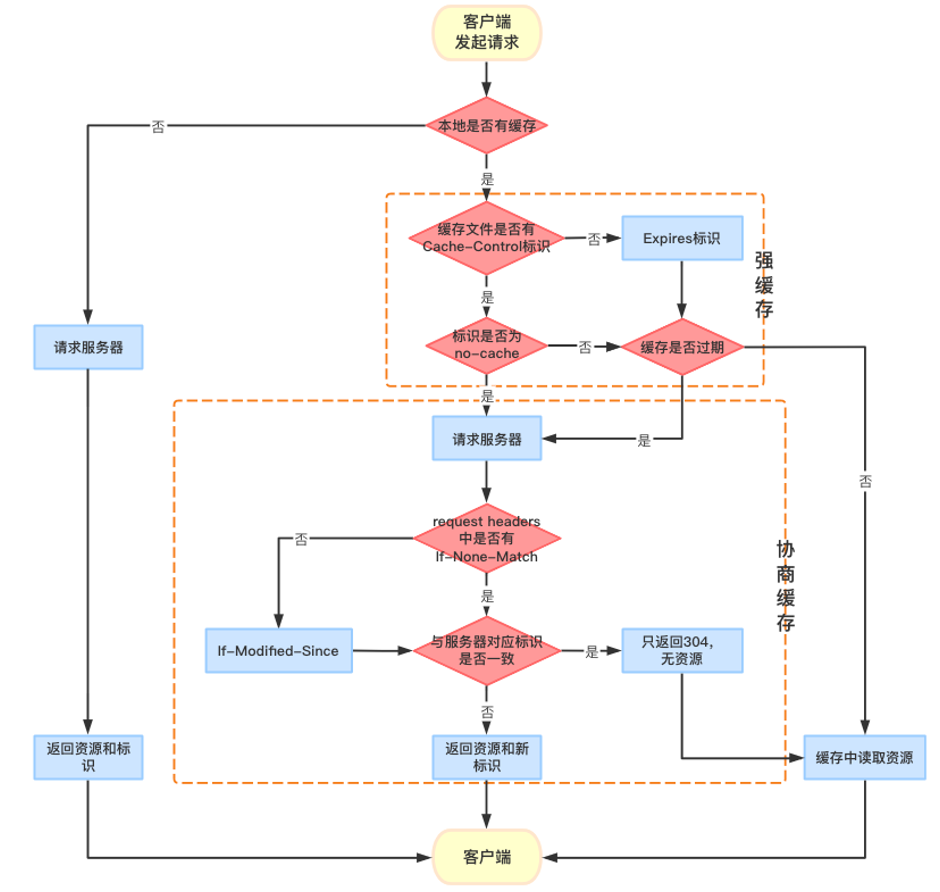
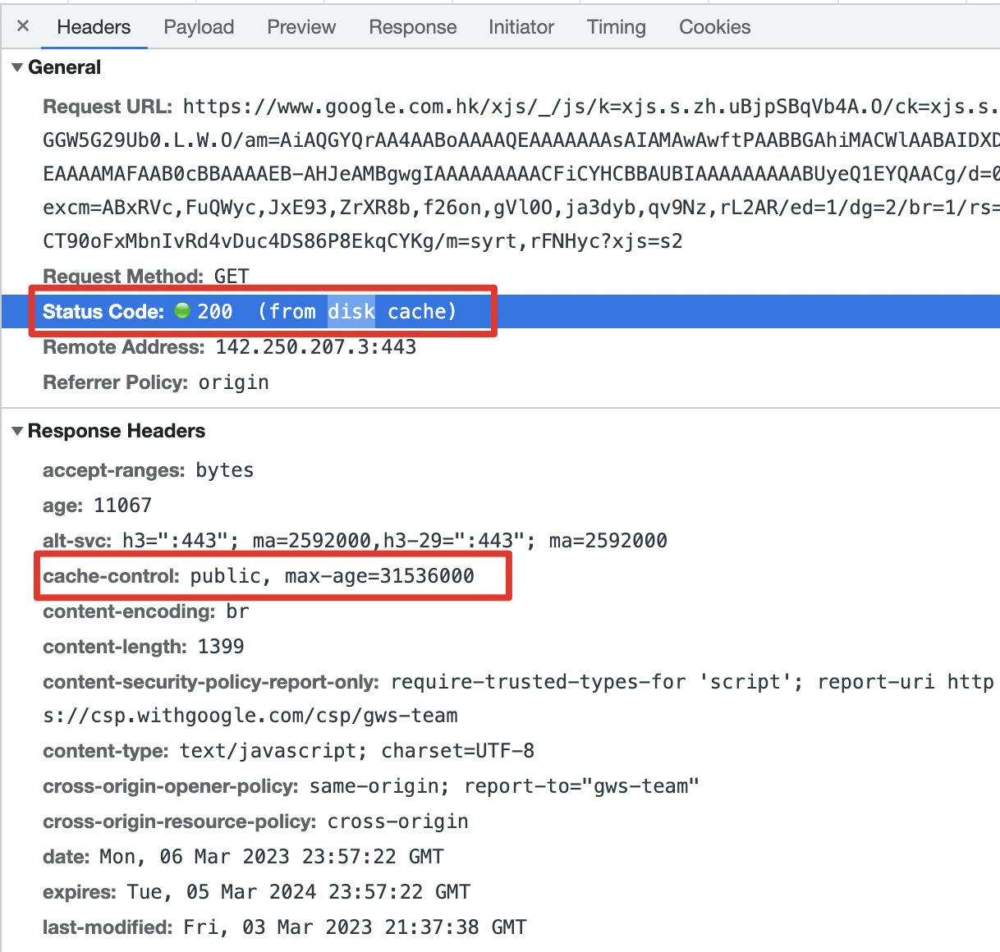

JS面试：前端缓存
一、浏览器缓存
localStorage、sessionStorage、cookie 都是同源的。
1、localStorage
特点：
- 永久存储数据，除非代码或手动删除
- 仅在客户端（即浏览器）中保存，不参与和服务器的通信
- 最多能存储
5MB数据
常用业务场景：
- 登录信息存储，同域信息共享
- 数据持久化，存储不常变动的数据
- 存储搜索历史记录数据
2、sessionStorage
特点：
- 基于回话窗口存在，浏览器窗口关闭则失效
- 仅在客户端（即浏览器）中保存，不参与和服务器的通信
- 最多能存储
5MB数据
常用业务场景：
- 登录信息存储，实现多窗口登录
- 存储一些你想在浏览器窗口关闭就清空的数据，下次进来再存
3、cookie
特点：
- 支持设置过期时间，不设置的话浏览器窗口关闭就失效
- 支持与服务器端通信，每次都会携带在
HTTP头中 - 不同浏览器可保存的数量不一样，尽量控制在20个以内，每个最多能存储
4KB数据，超出会被截掉
常用业务场景：
- 用户登录信息存储，将用户
id存放到cookie中（用户id得加密），每次请求其他api时判断该cookie是否存在，如果存在则用户已登录，如果不存在则代表用户没有登录
二、HTTP缓存
当 Web 请求抵达缓存时， 如果本地有“已缓存的”副本，就可以从本地存储设备而不是原始服务器中提取这个文档。
常用业务场景：
主要使用缓存来存储html、css、js、img等静态资源，一般不会去存储动态资源，因为对动态资源的缓存会对数据实时性造成影响

1、强制缓存
强缓存是当我们访问 URL 的时候，不会向服务器发送请求，直接从缓存中读取资源，但是会返回200的状态码。
我们第一次进入页面，请求服务器，然后服务器进行应答，浏览器会根据response Header 来判断是否对资源进行缓存，如果响应头中 expires、pragma 或者 cache-control 字段，代表这是强缓存，浏览器就会把资源缓存在 memory cache 或 disk cache 中。
第二次请求时，浏览器判断请求参数，如果符合强缓存条件就直接返回状态码200，从本地缓存中拿数据。否则把响应参数存在 request header 请求头中，看是否符合协商缓存，符合则返回状态码304，不符合则服务器会返回全新资源。
返回示例：

基于Expires字段实现的强缓存（废弃）
响应头中设置 expires: 本地时间戳，对比是否过期（存在服务器时间与本地时间不一致问题导致缓存异常，废弃）
基于Cache-control实现的强缓存
响应头中设置 cache-control: max-age=缓存的时间秒数，对比是否过期，在缓存有效时间内返回缓存数据，否则请求新资源返回。
Cache-control 常用字段值说明：
max-age=100：缓存100秒后过期，资源缓存在本地（常用）s-maxage：覆盖max-age，只用于代理服务器中缓存no-cache：使用协商缓存no-store：不走缓存public：可以被所有的用户缓存，包括客户端和代理服务器private：只能被客户端缓存，不允许CDN等中继缓存服务器对其缓存
2、协商缓存
协商缓存（也叫对比缓存）是由服务器来确定资源是否可用，在浏览器第一次发出请求时会带上字段（Last-Modified 或者 Etag），则后续请求则会带上对于的请求字段（if-modified-since或者if-none-Match），若响应头没有 Last-Modified Etag，则请求头也不会有对应的字段。
当浏览器没有命中强缓存时就会向服务器发送请求，验证协商缓存是否命中，如果缓存命中则返回304状态码，否则返回新的资源数据。
基于last-modified实现的协商缓存
- 首先需要在服务器端读出文件修改时间，
- 将读出来的修改时间赋给响应头的
last-modified字段。 - 最后设置
Cache-control:no-cache
1 | const http = require('http'); |
基于ETag实现的协商缓存
- 第一次请求某资源的时候，服务端读取文件并计算出文件指纹，将文件指纹放在响应头的
Etag字段中跟资源一起返回给客户端。 - 第二次请求某资源的时候，客户端自动从缓存中读取出上一次服务端返回的
ETag也就是文件指纹。并赋给请求头的if-None-Match字段，让上一次的文件指纹跟随请求一起回到服务端。 - 服务端拿到请求头中的
is-None-Match字段值（也就是上一次的文件指纹），并再次读取目标资源并生成文件指纹，两个指纹做对比。如果两个文件指纹完全吻合，说明文件没有被改变，则直接返回304状态码和一个空的响应体并return。如果两个文件指纹不吻合，则说明文件被更改，那么将新的文件指纹重新存储到响应头的ETag中并返回给客户端
1 | const http = require('http'); |
3、HTTP缓存的优点
1、节省带宽流量，省钱
2、从本地获取资源，更快的加载页面
3、降低了对原始服务器的要求，服务器可以更快地响应，避免过载的出现